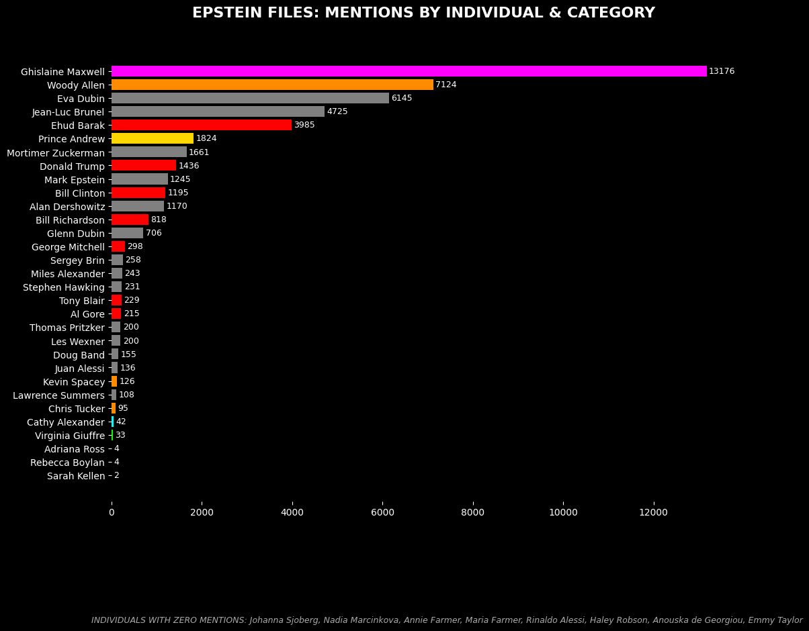
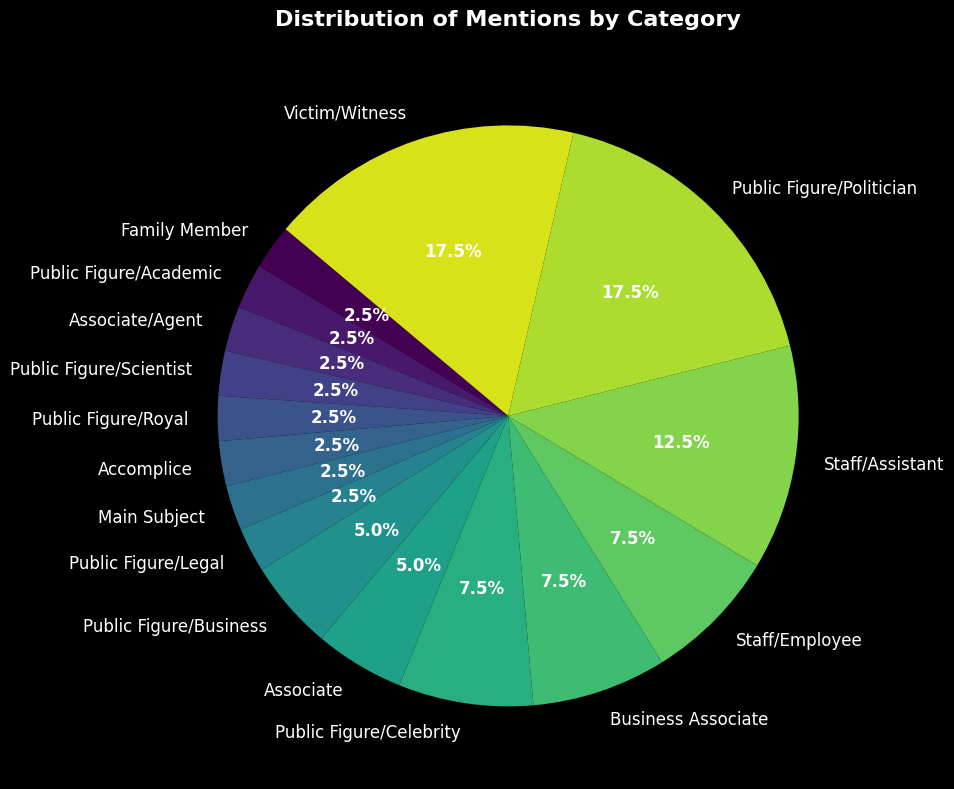

A data analysis project to explore famous names in the database of the Epstein files.
Before starting, you can download the CSV file containing the names we selected by clicking below.
Now let's see the mentions of the names in the database.

We can see that the most mentioned name is... Epstein, what a surprise... and his accomplice Ghislaine Maxwell.
After all, this is a database about Epstein, so it is not surprising that his name is the most mentioned, but it is interesting to see that Ghislaine Maxwell is the second most mentioned name, which shows that she is a very relevant figure in the database.
And in third place? Eva Dubin, Epstein's wife, which is also interesting because it shows that she is a relevant figure in the database.
Strangely, the victims are not the most mentioned names, which is interesting because it shows that they are not the most relevant figures in the database, but this is something that we will explore in the next section.
Here we can see the mentions of the names by category.

We can see that the names of the victims, as well as the political figures, are the most mentioned, if we do not count Epstein.
This is interesting because it shows that the victims and the political figures are the most relevant in the database, and that they are the ones that are most mentioned.
Are we surprised by this? Not really, but it's good to see it in numbers. Now let's dive deeper.
In this section, you can open all of the Wikipedia pages, if there are any, of the people who are mentioned in the database.
In conclusion, we can see that the most mentioned names in the database are Epstein and Ghislaine Maxwell, which shows that they are the most relevant figures in the database. However, we can also see that the victims are not the most mentioned names, which is interesting because it shows that they are not the most relevant figures in the database.
And what if the victims were not called by their names? What if they were called by their initials? This is something that we can explore in the future, because we do not have all the files yet.
As time goes on and more files are released, we will be able to analyze more names and see if the trends that we see now continue or if they change. But for now, this is what we can say about the names in the Epstein database.
This is a preliminary analysis, and we will continue to explore the data as more files are released, but for now, this is what we can say about the names in the Epstein database.